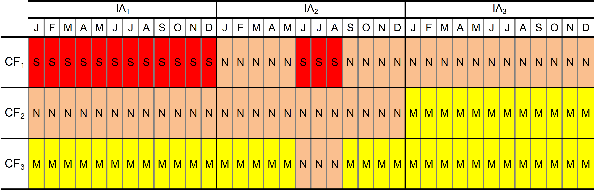
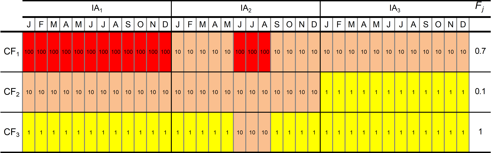
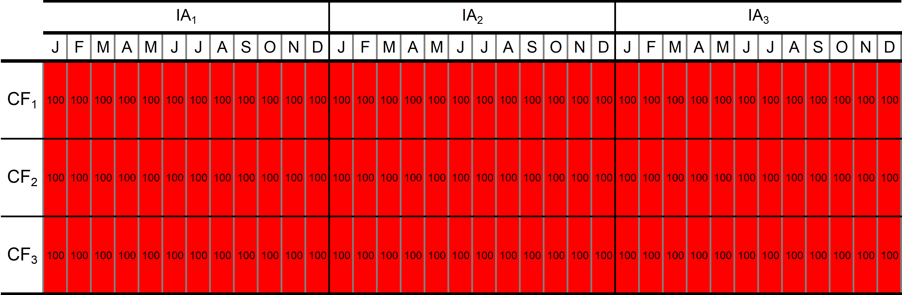

ArcNet is a network design framework to help achieve ocean-scale, area-based marine conservation in the Arctic. The framework is centred around a network of 83 priority areas for conservation (PACs) designed through expert-driven systematic conservation planning using conservation targets for over 800 conservation features (CFs) that represent Arctic biodiversity. These CFs, their targets, and PACs were identified systematically based on their biological and ecological significance; therefore, implementing the ArcNet PACs as a network of protected and conserved areas will strengthen the Arctic Ocean’s biodiversity and help nations deliver on their UN-level commitments to protect 30% of oceans by 2030 (CBD, 2022). For a detailed overview of the ArcNet initiative, see James et al., (2024).
Thus far, ArcNet PACs have only been earmarked for conservation based on their biological and conservation significance and remain as areas of priority until conservation measures for them are established. Implementing a pan-Arctic marine conservation network will entail establishing measures both within and beyond the ArcNet PACs across the Large Marine Ecosystems since conservation and sustainable ocean use can only be achieved with measures implemented across the physically- and biologically-connected ocean space. Since marine conservation is implemented by national and sub-national actors, through national and international mechanisms, and by regulating human activities, achieving effective ocean-scale, area-based marine conservation in the Arctic will require:
approaches and tools to facilitate broad engagement;
assessing human uses and how they potentially affect CFs and conservation objectives;
prioritising areas where conservation needs are the most urgent;
evaluating and selecting appropriate conservation measures and management regimes for each PAC; and
To this end, GERANIUM was developed as an engagement and visualisation tool for ecosystem-based marine spatial planning and tailored area-based conservation. Geranium focuses on industrial activities and the concern they may cause for marine biota and its habitats. The tool organises and guides discussions by providing a visualisation of locality and feature-specific conservation needs in the context of current and anticipated industrial activities. It fosters cooperative processes across marine stakeholders, thereby helping to tailor conservation and management measures for each locale, serving as a tool to enable the systematic implementation of ArcNet and other identified priority areas for conservation.
The following terms are used in the discussion around Geranium and are key for understanding its conservation prioritisation process:
Amount - A standardised, unitless measure of how much of a specified CF or industrial activity is contained in a given location, which shows the relative importance of a given location for the specified CF or industrial activity.
ArcNet domain – The ArcNet domain is defined by the southern border of the 18 PAME-ecologically defined regions of the Arctic Ocean and adjacent seas, known as the Arctic Large Marine Ecosystems (LMEs), which focussed ArcNet on the Arctic Realm as defined by the Marine Ecoregions of the World (Spalding et al., 2007), excluding the Faroe Plateau, Norwegian Sea, and Aleutian Islands LMEs. For the east and west Bering Sea LMEs, ArcNet only includes the area covered by the Bering Sea shelf.
Area of interest (AOI) – Any area within the ArcNet domain selected by a user to be considered in Geranium’s conservation prioritisation.
Industrial activities (IAs) – Industrial-scale activities that are delivered for profit and the result of which is the creation of goods or provision of services, which are then sold on the market. In Geranium we only considered activities directly affecting Arctic marine and coastal environments.
Conservation features (CFs) - The measurable and spatially defined components of biodiversity that are to be conserved either within (see James et al, 2024) or beyond the ArcNet network. In the context of ArcNet’s long-term conservation of Arctic marine biodiversity, they represent the important biological and ecological elements of the Arctic marine ecosystem.
Concern level – The level of concern for the long-term conservation objectives of a CF based on the CF’s susceptibility to associated risks. Three levels of concern were initially assigned to each CF-IA pair by the experts: significant, notable, and minor (see definitions below).
Conservation concern assessment – The systematic process of assessing a concern level for each CF resulting from each industrial activity within the ArcNet domain. The conservation concern assessment was initially undertaken by ArcNet experts. Note that this assessment does not deal with the actual distribution of industrial activities but is rather assessing the level of concern these activities can cause for CFs at locations where they occur or could occur.
Concern indexes – A number of metrics that are used in Geranium to quantify how levels of concern differ between CFs, AOIs, and industrial activities throughout the year.
Conservation need – The combination of measures and regulations that are required to ensure the long-term conservation of a given area based on the results of the conservation concern assessment and concern indexes. Conservation need is a derivative of the concern levels for all CFs within a particular AOI and does not consider whether any existing or planned industrial activities occur within or in the vicinity of an AOI. The recommendations of how to minimise risks and concerns (if possible) for the selected AOI are provided by the ArcNet experts.
Conservation action priority – A prioritisation of conservation effort based on an overlay of conservation needs and actual and / or planned distribution of industrial activities.
Coverage – The proportion (in percent) of the total CF amount within an AOI.
Planning unit (PU) – The smallest spatial unit of the ArcNet analysis, measuring 30x30 km2 that divided the ArcNet domain into 22,678 PUs.
To identify the conservation needs of ArcNet PACs or any other area of interest within the ArcNet domain based on an assessment of conservation concern for marine biodiversity caused by existing or potential industrial activities for informing the design of conservation or management regimes and prioritising areas where conservation action is needed the most.
Compile a database of existing and potential industrial activities in the ArcNet domain;
Compile a spatial database of conservation features (CFs) that represent marine biodiversity of the Arctic;
Assess the concern level (minor, notable, or significant) for each CF that is associated with each industrial activity;
Identify specific recommendations for each activity to ensure they will not interfere with the conservation objectives of any given CF (where applicable);
Apply the results of the conservation concern assessment to identify conservation needs for each area;
Combine spatial distributions of existing and planned activities and conservation needs to identify conservation action priorities, i.e., where activities cause greatest concern to the conservation of marine life and require urgent action; and
Based on these needs, priorities, and existing legislation, select and propose new appropriate conservation measures, management regimes, or needed legislation for each AOI, including ArcNet PACs.
Each of these objectives are described in more detail below.
Note that at this time, the potential impacts of military-related activities and those of Indigenous Peoples and coastal communities, including scientific field activities, have been excluded from the Geranium conservation prioritisation exercise since they require special methodologies as well as the involvement of key stakeholders.
A list of existing and potential industrial activities in the Arctic seas was compiled. It includes the following major activities: aquaculture, fisheries, infrastructure, mining (including oil & gas production), shipping, and tourism. These activities were subdivided further into specific activities based on their associated impacts and potential risks for long term conservation goals:
Aquaculture was subdivided into:
Finfish Farms (AC);
Shellfish Farms (AM); and
Seaweed Farms (AS).
Fisheries was subdivided by the type of fishing gear to reflect the different impacts they may have on CFs, including:
Dredge Fishing (FBD);
Bottom Gillnets Fishing (FGB);
Bottom Trawling (FBT);
Pot and Trap Fishing (FCT);
Drift Net Fishing (FDN);
Pole and Line Fishing (FFR);
Invertebrates Collection by Divers (FIC);
Longline Fishing (FLF);
Purse Seine Fishing (FPS);
Pelagic Trawling (FPT);
Seine and Stationary Seine Fishing (FSE);
Seaweed Mowing (FSM); and
Snurrevad Fishing (FSN).
Infrastructure was subdivided into:
Coastal Infrastructure (ICI);
Dredging (ID);
Underwater Oil & Gas Pipelines (IOP);
Coastal Oil Terminals (IOT);
Submarine Communication Cables (IUC); and
Offshore Wind Farms (IW).
Mining was subdivided into:
Coastal Onshore Mining (MCM);
Offshore Gas Production (MGP);
Other Offshore Mining (MOM); and
Offshore Oil & Gas-condensate Production (MOP).
Shipping (which pertains only to transport shipping as other uses were included in other industrial activities, e.g., tourist vessels in tourism, fishing vessels in fisheries, etc.) was subdivided by type of fuel since this is the main determining factor of the potential impacts of shipping, with tankers categorised separately, including:
Cargo Vessels - Heavy Fuel Oil (SHF);
Cargo Vessels – Light Fuel Oil (SLF);
Cargo LNG-powered Vessels (SLN);
Nuclear-powered Vessels (SN); and
Tankers carrying oil and other petrochemicals (ST).
Finally, tourism was subdivided into:
Ecotourism (TET); and
Mass Tourism (TMT).
Each activity was characterised in the first instance by the ArcNet experts, including comments on their seasonality, spatial distribution limitations, associated activities, and impacts. Potential limits of their spatial distribution, such as depth, distance to shore or ice cover presence/absence were also defined. Finally, data were collected on the current and potential future distribution of each activity, in particular, information on development plans already in place (e.g., forthcoming mining projects or construction of new ports).
To assess the concern level for each locale in the Arctic in a systematic way, a spatial database of CFs was required to represent the elements of marine biodiversity of the Arctic. While specific CFs will arise through local conservation efforts, a comprehensive list of CFs on a pan-Arctic scale has already been compiled for the ArcNet analysis, and these CFs have been used in the Geranium conservation prioritisation exercise. Details of the compilation of this list and of the ArcNet analysis generally can be found in James et al. (2024).
All the CFs that were compiled for the ArcNet analysis were used in the Geranium exercises with the exception of those representing the primary and secondary producers (i.e., phyto and zooplankton), which are mainly represented in ArcNet by the CFs of ice-associated communities. These CFs were not considered in Geranium’s conservation concern assessment as currently there are no known approaches to do so successfully. Also, as these organisms have high recovery rate, i.e., they recover quickly if disturbed or even destroyed, it is not yet clear how to assess risks or impacts from industrial activities. Therefore, only 705 of ArcNet’s 800+ CFs were considered in Geranium’s conservation prioritisation exercise.
Once the lists of industrial activities and CFs were compiled, teams of experts undertook the conservation concern assessment by assigning the level of concern for the long-term conservation objectives of each CF caused by each industrial activity. In Geranium, the three levels of concern (and not applicable) are defined as follows:
Minor (M, yellow) - Related risks to the CF, if any, are considered mitigatable by adhering to existing environmental standards and best practices;
Notable (N, brown) - Related risks to the CF require mitigation through activity-specific and/or habitat/biotope-specific considerations;
Significant (S, red) - Related risks to the CF are considered non-mitigatable through activity-specific and/or habitat/biotope-specific considerations; and
Not applicable, (N/A) - An activity cannot physically occur / does not spatially or seasonally overlap with a CF (habitat / biotope).
During the assessment, experts were asked to consider both: what level of concern does an activity cause for the conservation objectives of each CF; and can this activity be compatible with the conservation objectives of a CF in a given location, and, if so, under what conditions?
Importantly, experts did not assess the theoretical likelihood of a species or a biological community surviving in a disturbed or altered environment. Rather, they considered the features’ susceptibility to potential risks associated with an activity and identified a level of concern in the event of a worst-case scenario. These decisions were made from the perspective of long-term conservation goals rather than within an environmental impact assessment framework.
Using the defining principles outlined below, the assessment was conducted independently for each thematic group of taxa, primarily by the respective groups’ experts who carried out the ArcNet analysis and who participated in the CF selection, data collection, and conservation target setting (James et al., 2024). After the primary assessment, the ArcNet thematic groups met to discuss their approaches and to make sure they were uniform. Upon completion, the results were checked for consistency and combined into tables that were used as a primary source of information for the Geranium tool. An example of the assessment tables is provided below in the Geranium indexes explained section.
Considering the full-cycle industrial activity: When assessing whether an activity can cause conservation concern for a CF, experts evaluated the direct associated risks of the full life cycle within each industry . For example, shipping of cargo in areas where ringed seals are whelping in the Chukchi Sea between March and June will inevitably involve breaking the ice cover with icebreakers or high ice class ships. Construction of ports on shallow water coasts will often require dredging to maintain navigation channels, thus its impacts were considered in the assessment of a port construction accordingly. Offshore oil mining involves various surveys including seismic surveys, ship traffic consisting of supply and tanker vessels, construction of infrastructure - platforms and terminals, etc.
The worst-case scenario approach: As each activity is associated with various risks on different scales (e.g., frequency, timing, longevity, and magnitude) and, therefore, different potential impacts, the concern level for a given conservation feature was selected based on the worst case scenario. For example, while an oil pipeline is associated with concern from increased water turbidity, underwater noise, physical disturbance, etc., it is the risk of an accidental major oil spill that defines the level of concern for this activity.
Existing environmental standards and best practices: Prior to the conservation concern assessment, it was assumed that all industrial activities already met any existing environmental standards, requirements, and conservation best-practices. Therefore, the assessment considered inherent and specific risks associated with an activity. For example, experts did not need to list requirements for a fishery to be sustainable or for fishing vessels to follow the International Convention for the Prevention of Pollution from Ships (MARPOL) requirements, etc. Rather, they were asked to focus solely on: to what extent a CF is susceptible to the inherent impacts of a fishery in general, e.g., ship noise, risks of fuel leaks, light pollution, physical disturbance, and to what extent a CF is sensitive to impacts of the specific fishery type, e.g., for bottom trawling, destruction of benthic communities, risks of entanglement, etc.
Treatment of representative benthic communities: There is a limited number of benthic distinctive features considered for analysis in ArcNet: kelps, seagrasses, seeps, seamounts, cold water corals, and shelf banks. These features were included in the assessment because their biology and ecology are known and understood in principle. However, the majority of benthic features considered during the assessment are representative units derived from geomorphic regionalisation – such as slopes, shelfs, gullies, canyons, abyssal plains, etc. It is understood that each of these units represents certain types of benthic communities, but that there is too little known of their biological and ecological characteristics to assess potential impacts of various industrial activities. Therefore, while these features are included as CFs in the assessment, the minimal level of risk was assigned to each activity that was deemed to have any theoretical impact on these features. It is important to note that this does not signify that experts believe that the level of concern is minor, but rather that while the real scale of any impact on these CFs is unknown, they should nonetheless be included in the assessment.
Seasonality: Seasonality in the Arctic Ocean is a major factor affecting both biodiversity and industry life cycles. Thus, the seasonality of both CFs and any potential risk was considered. For example, if a CF is seasonal (e.g., ice whelping areas used by harp seals only during pupping season) and an industrial activity takes place only during certain times of the year (e.g., shipping that only requires icebreaking during the ice season), the assessment considered the high- and off-season months separately based on the CF life cycle. In this example, shipping can cause significant or notable concern during the whelping season but minor concern in the same areas outside the whelping season.
Assumptions when an industrial activity is not applicable: In cases where an activity is not technically possible in a CF, e.g., long-line fishery in saltmarshes, the activity was assessed as not applicable. However, when an industrial activity is not currently taking place in an area, has never taken place in that area, and plans to initiate the activity are not known, concern for the activity was nonetheless assessed if its occurrence is technically possibility. In general, a precautionary approach was taken in that where there was any doubt, the assessment was undertaken, and a concern level was assigned.
The not applicable status was assigned based on certain assumed limitations for each activity, i.e., depths, distance to the shoreline, ice cover presence/absence and seasonality, and superimposing these limitations on the assessment tables as a mask to filter out non applicable activities. Several parameters, including depth, distance to the shoreline, and dependence on the presence of the ice cover are provided in the section “Industrial Activity Overview” .
Reconciling different scales: Given the local nature of risks of industrial activities in the Arctic on one hand and the pan-Arctic nature of CF data in the ArcNet database on the other, a mismatch of scales sometimes occurred in this assessment. The scale factor turned out to be a significant issue in the concern assessment, emphasising the need to pursue specific and final decisions regarding conservation/planning at a finer scale than the pan-Arctic scale of the ArcNet project.
A particular issue was the insufficient data for mapping the distribution of a CF in sufficient local detail. For example, some important seal or seabird habitats used in the analysis stretch for hundreds of kilometres, while the distribution of animals within these habitats is patchy and/or intra- or inter-annually dynamic with some core parts of the habitats being used by animals more often and/or regularly. Therefore, assessed concern levels should reflect these core areas as well as the rest of the habitat. When the core areas of a CF are not well-known or well-mapped (as is often the case in ArcNet), experts assigned the notable concern level whereas when the core areas are well-studied and mapped, they could be assigned significant concern while the remainder of the CFs could be assigned the minor concern.
Another wide-spread issue involved coastal areas, where a high concentration of CFs coincides with most industrial activities. Fine scale distribution patterns of coastal habitat do not fit into ArcNet’s pan-Arctic scale. Therefore, it is likely that the occurrence of coastal industrial activities is overestimated, i.e., covering a larger area than in reality, and further analysis is required to downscale the distribution of these activities in the assessment.
Cumulative impacts of industrial activities: The assessment was conducted separately for each CF and for each activity without considering any possible cumulative or combined impacts, e.g., how the impacts of tourism, fisheries, and infrastructure activities might combine to create a cumulative, emergent impact. Rather, these cumulative impacts should be assessed on a finer scale at the next level of planning, which will, in many cases, require more detailed data.
Remote impacts of industrial activities: The assessment considered only the risks associated with industrial activities that spatially overlap with CFs. While some industrial activities can have impacts on CFs located at a distance: such as pollution down-stream from oil production, these remote risks should be assessed at the next level of planning.
The experts had to consider the impacts of 33 industrial activities on 705 CFs over 12 months of the year, meaning that they had to make 279,180 individual decisions. Despite all efforts to make these decisions as consistently and as justly as possible, we recognise that it is not possible to undertake such an assessment flawlessly, particularly at this scale and given the paucity of data in the ever-changing Arctic, the rapid development of new and expanding industries and practices, and the regular influx of new information from research about the impact of industrial activities on biodiversity. Therefore, Geranium’s expert-driven concern assessment was designed as an initial assessment to help conservation planners and other stakeholders engage in meaningful discussion rather than to provide ultimate answers. To this end, it includes a dedicated Discussion section where any interested party can challenge or confirm the assessment results and provide their view and rationale. In addition, the Geranium experts will continue to update and fine-tune the outputs of the assessment as new information arises.
In addition to the assessment, experts were asked to identify specific recommendations for each activity that will help minimise their interference with the conservation objectives of each CF. For practical purposes, these recommendations were needed mostly where notable concern had been identified. Such requirements include, for example, speed limits on vessels travelling through a CF, noise limits, the implementation of mitigating technologies, or highlighting a need for additional research or monitoring. It is important to stress that these recommendations are aimed at initiating discussion on specific actions and are not seen as final. Specific measures for activities should be determined after additional research and consideration specifically for each area.
Once the conservation concern assessment was completed for all 705 CFs and 33 industrial activities, the results, which are tied to the spatial distribution of each CF, were overlaid on maps of the ArcNet domain and its PACs, the Marine Ecosystems of the World (MEOW), Large Marine Ecosystems (LME), Exclusive Economic Zones (EEZ), or any other AOI selected by a user) to identify conservation needs. This overlay reveals the spatial distribution and level of concern, which will help conservation and marine spatial planners by highlighting industrial activities that may be a source of concern in each area, what measures are required to minimise these concerns, as well as any data/information that is missing in each area.
Importantly, Geranium was designed with area-based prioritisation in mind through the definition of the specified areas of interest (AOIs). This approach allows for conservation strategizing and planning for a specific area to be undertaken at the species or population level or focussed on industrial activities. For example, species (or population) conservation planning can be undertaken by selecting a group of CFs for a given species as the AOI and overlapping their associated concerns and recommendations . Alternatively, a single CF can be selected as the AOI and its concern level and conservation need can be identified. Similarly, a group of IAs or a single IA can be selected as the AOI, and an overview of the concerns caused for different CFs and associated recommendations for minimising this concern is provided.
To help interpret these results, a number of indexes were developed to highlight different elements of the concern assessment and how areas, features, and activities compare. These are listed and briefly explained below. Detailed formulas and examples of how each index is calculated are provided in the Geranium indexes explained section.
Overall Concern Level (OC) is an index showing the overall (i.e., minor, notable, and significant) cumulative concern level for a CF caused by an IA.
Significant Concern Level (SC) is an index similar to OC but where only significant concern levels are taken into account, highlighting areas where CFs are subject to the highest cumulative non-mitigable risks from a given IA.
Overall (OC-AOI) and Significant (SC-AOI) Concern Level for a given AOI are indexes showing the overall or significant cumulative concern levels for an AOI where OC or SC are summed for all CFs and IAs that occur within the AOI, scaled by the coverage of the CFs in the AOI. They are used to demonstrate overall level of concern for a given AOI.
Relative Overall Concern Level for a given CF (ROC-CF), for a given IA (ROC-IA), month (ROC-M) and for a given AOI (ROC-AOI, SC-AOI) are indexes that show how cumulative concern levels (OC) for a given CF, IA, or month compared to a baseline that represents the maximum possible for that CF, IA, or month respectively. They are used to identify CFs whose conservation goals are at the greatest risk, IAs that are sources of the greatest risk and IAs that cause only minor risk, and also months of a year when the concern is the highest. Note that in the case of ROC-IA, CF coverage is applied to scale the concern levels of a CF by the proportion of that CF that occurs in the AOI. In case of ROC-AOI and SC-AOI overall and significant concern levels for selected areas are compared to a baseline representing the maximum possible concern for all CFs within the given area and allow for comparison of different AOI.
Overall (ROC-PU) and Significant Concern Level by PU (RSC-PU) are indexes similar to OC-AOI and SC-AOI except they are averaged by PU and relative to the average concern level for a PU in the ArcNet domain. These indexes are helpful because they are independent of the size of an AOI, which enables the comparison of different AOI (such as PACs).
Overall Concern level (OC-P) and Significant Concern Level for PU (SC-P) – is an index calculated for mapping overall concern and is calculated for each PU independently.
Given the availability of resources for conservation action are limited, it is important to prioritise areas where conservation needs are the most urgent. In particular, areas with existing or planned industrial activities that cause significant concern as well as particularly vulnerable or significant features of biodiversity should be prioritised over areas with no existing or planned development or where biodiversity is less vulnerable. Achieving this level of prioritisation is possible in Geranium because spatial information on existing and planned industrial activities in the ArcNet domain have been compiled.
Data representing the spatial distribution of each industrial activity that is currently underway in the Arctic was collected, normalised, and averaged for each PU. Geranium uses two datasets of the distribution of industrial activities in the ArcNet domain: one that includes information on the distribution of known current activities, including those planned to start before and including 2025, and another that includes planned activities up to 2030. Geranium prioritisation allows the user to choose the desired dataset for their conservation planning from the Geranium main page.
To this end, a number of indexes were developed to measure overall industrial pressure based on conservation concern, conservation need, and the distribution of current and planned industrial activities in the ArcNet domain. They are listed and briefly explained below. More detail and examples of how these indexes are calculated can be found in the Geranium indexes explained section.
Industrial pressure indexes demonstrate where the pressure on marine biodiversity in the Arctic is the highest when calculated for current activities (planned to start before and including 2025) and where it can be high or particularly concerning if calculated for planned, future activities (up to 2030). Prioritisation for potential conservation action should be done based on the assessment of the potential level of overall industrial pressure for the future.
Industrial Activity Amount, relative (AA-PU) is a measure of the cumulative amount or occurrence of industrial activities per PU, normalised and averaged for each PU. It is indicative of the overall industrial presence that exists for each AOI compared to the average presence across the ArcNet domain.
Overall industrial pressure indexes (OIP) are calculated per PU for activities, CFs, months and AOIs, they are calculated as a multiplication of CF and activity amounts with a concern level for each pair serving as a coefficient.
Relative Overall Industrial Pressure Level for a given CF (ROIP-CF), from a given IA (ROIP-IA), month (ROIP-M) and for a given AOI (ROIP-AOI) are calculated as a proportion of the maximum possible industrial pressure (baseline scenario) defined as if the amount of industrial activities stays as it is and the concern level for each CF within given AOI is the highest possible (significant).
Relative Overall Industrial Pressure Level by PU (ROIP-PU) is a similar index to ROIP-IA except it is averaged by PU and relative to the average industrial pressure level for a PU in the ArcNet domain.
Overall Industrial Pressure for PU (OIP-P) is an index calculated for mapping overall industrial pressure and is calculated for each PU independently.
It is important that all metrics should be considered when prioritising areas for conservation and management.
Finally, based on all the biological, geographic, and socio-economic information that were provided and analysed in Geranium, appropriate conservation measures, management regimes, regulations, or needed legislation can be developed by stakeholders through the use of the iterative and collaborative tools of the Geranium interface. Geranium has been designed specifically to help to structure discussions and focus attention on concrete conservation concerns and identify areas where additional information is needed.
The conservation concern assessment was undertaken by experts who were asked to assess the level of concern of each activity for every CF in every month of the year, ultimately assigning one of the levels of concern—minor, notable, or significant (M, N, S)—according to their definitions above (see Section 3). Note that not applicable (N/A) was also applied when an activity cannot physically overlap with a CF during that month. Assessing concern level by month allows the seasonality of concern to be taken into account, which is important since seasonal dynamics play a significant role in the Arctic ecosystem. The assessment results were then used to calculate a number of indexes designed to reveal different characteristics of the distribution and intensity of conservation concern across the ArcNet domain and between different areas.
For the purposes of translating the concern levels into numerical indexes that reflect their relative importance, they were assigned concern scores of different weights \(W_{m},W_{n},W_{s}\), such that:
\(W_{m} = 1,\) \(W_{n} = 10\), and \(W_{s} = 100\)
Therefore, overall concern scores (OCS), which includes all levels of concern caused by an industrial activity (i) for a CF (j) for any months of the year (k) are given according to:
\[{OCS}_{ijk} = \left\{ \begin{matrix} W_{s}, & \text{for "}\text{Significant}\text{"}, \\ W_{n}, & \text{for "}\text{Notable}, \\ W_{m}, & \text{for "}\text{Minor}\text{"}, \\ N/A, & \text{for "}\text{Not Applicable}\text{",} \end{matrix} \right.\ \]
Significant concern scores (SCS), which only include significant level of concern, are thus given according to:
\[{SCS}_{ijk} = \left\{ \begin{matrix} W_{s}, & \text{for "}\text{Significant}\text{"}, \\ 0, & \text{for "}\text{Notable}\text{"}, \\ 0, & \text{for "}\text{Minor}\text{"}, \\ N/A, & \text{for "}\text{Not Applicable}\text{"}. \end{matrix} \right.\ \]
These concern scores form the basis of the indexes discussed below, which are also based on the following parameters:
U – the number of PUs in an AOI;
U0 – the number of PUs in the ArcNet domain, where U0 = 22,678;
Fj – CF coverage in an AOI, i.e., the proportion of the CF area in the AOI to the total area of that CF. When the AOI is the whole ArcNet domain, Fj0 = 1 for all CFs;
NM – number of months to be included in the index calculation, which provides a seasonality factor. \(N_{M} = 12\) for whole year
NCF – number of CFs in selection; and
NIA – number of IAs in the selection.
In the following indexes, OCSijk and SCSijk are used as the “building blocks” for comparing concern levels between CFs, industrial activities, and AOIs simply by summing the concern scores across selected months of the year. The overall concern (OC) for the selected CF and IA (i.e., for any CF and IA pair for any given months of the year) is given by:
\[{OC}_{ij}^{CF/IA} = \sum_{k}^{by\ months}{{OCS}_{ijk}:{OCS}_{ijk} \neq \frac{N}{A}}\]
\[1\]
\[{OC}_{jk}^{CF/M} = \sum_{i}^{\text{by IAs}}{{OC}_{ijk}:OC_{ijk}} \neq \frac{N}{A}\]
\[{OC}_{ik}^{IA/M} = \sum_{j}^{\text{by CFs}}{OC_{ijk}:OC_{ijk}} \neq \frac{N}{A}\]
and significant concern (SC) by:
\[{SC}_{ij}^{CF/IA} = \sum_{k}^{by\ months}{{SCS}_{ijk}:{SCS}_{ijk} \neq \frac{N}{A}}\]
\[2\]
Summing the OCij or SCij scores for all CFs and activities in an AOI provides the cumulative overall concern (OC-AOI) and the cumulative significant concern (SC-AOI), respectively, for that AOI:
\[OC\text{-}AOI = \ \sum_{i}^{\text{by IA}}{\sum_{j}^{\text{by CF}}{F_{j} \cdot {OC}_{ij}^{CF/IA}}}\]
\[3\]
and:
\[SC\text{-}AOI = \ \sum_{i}^{\text{by IA}}{\sum_{j}^{\text{by CF}}{F_{j} \cdot {SC}_{ij}^{CF/IA}}}\]
\[4\]
where Fj scales the OC or SC according to the proportion of the total CF area that occurs in the AOI.
In order to compare concern levels between different CFs, activities, or AOIs, they must be normalised. One way to achieve this is to make comparisons against a baseline. The baseline we use in Geranium is the base significant units (Bij), which is the highest concern score possible for the given comparison. It is calculated using the equation for SCij, where the significant concern level is assigned for every month of the year, for every activity, and for every CF in the companion. Thus:
\[B_{ij}^{CF/IA} = \left\{ \begin{matrix} \infty, & \forall k:MNSC_{ijk} = N/A \\ N_{M} \cdot max(W), & \text{otherwise}. \\ & \end{matrix} \right.\ \]
\[B_{jk}^{CF/M} = \left\{ \begin{matrix} \infty, & \forall i:MNSC_{ijk} = N/A \\ N_{IA} \cdot max(W), & \text{otherwise}. \\ & \end{matrix} \right.\ \]
\[B_{ik}^{IA/M} = \left\{ \begin{matrix} \infty, & \forall j:MNSC_{ijk} = N/A \\ N_{CF} \cdot max(W), & \text{otherwise}. \\ & \end{matrix} \right.\ \]
For regional applications then where B is scaled by the CF coverage (F):
\[B = \sum_{i}^{\text{by IAs}}{\sum_{j}^{\text{by CFs}}\left( F_{j} \cdot B_{ij}^{CF/IA} \right)}\]
\[5\]
Using this baseline, we can compare overall concern levels for a given CF or IA relative to this baseline scenario. The relative overall concern for a CF (ROC-CF) compared to the maximum possible concern level for that CF is given by:
\[{ROC\text{-}CF}_{j} = \frac{\sum_{i}^{\text{by IA}}{{OC}_{ij}^{CF/IA}}_{}}{\sum_{i}^{\text{by IA}}B_{ij}^{CF/IA}}*100\%\]
\[6\]
Similarly, the relative overall concern for an industrial activity (ROC-IA), is given by:
\[{ROC\text{-}IA}_{i} = \frac{\sum_{j}^{\text{by CF}}{(F}_{j} \cdot {OC}_{ij}^{CF/IA})}{\sum_{j}^{\text{by CF}}{(F}_{j} \cdot B_{ij})}*100\%\]
\[7\]
Here, the comparison also requires normalisation for different CF coverage (Fj) within an AOI. Similarly, for months:
\[ROC\text{-}M_{k}^{M} = \frac{\sum_{j}^{\text{by CFs}}\left( F_{j} \cdot {OC}_{jk}^{CF/SM} \right)}{\sum_{j}^{\text{by CFs}}\left( F_{j} \cdot B_{jk}^{CF/SM} \right)}*100\%\]
We can make a similar comparison for different AOIs, this time considering both overall and significant concern levels. The relative overall concern for an AOI (ROC-AOI) and the relative significant concern for an AOI (RSC-AOI), which compares cumulative concern levels (OC-AOI and SC-AOI) to the maximum possible concern for that AOI, are given by:
\[ROCAOI = \frac{OC\text{-}AOI}{\sum_{i}^{\text{by IA}}{\sum_{j}^{\text{by CF}}{{{(F}_{j} \cdot B}_{ij})}}}*100\%\]
\[8\]
and:
\[RSCAOI = \frac{SC\text{-}AOI}{\sum_{i}^{\text{by }\text{IA}}{\sum_{j}^{\text{by CF}}{({F_{j} \cdot B}_{ij})}}}*100\%\]
\[9\]
Another way to compare concern levels for AOIs is to normalise them by PU. Thus, the relative overall concern (ROC-PU) and the relative significant concern (RSC-PU) for an AOI by PU are given by:
\[ROCPU = \frac{OC\text{-}AOI \bullet U^{- 1}}{OC_{0} \bullet U_{0}^{- 1}}*100\%\]
\[10\]
and:
\[RSCPU = \frac{SC\text{-}AOI \bullet U^{- 1}}{SC_{0} \bullet {U_{0}}^{- 1}}*100\%\]
\[11\]
where U is the number of PUs in the AOI, U0 is the number of PUs in the ArcNet domain (U0 = 22,678) and OC0 and SC0 are the overall and significant concern, respectively, for the ArcNet domain as calculated by:
\[OC_{0}\ = \sum_{i}^{by\ IA}{\sum_{j}^{by\ {CF}_{0}}{F_{j} \cdot OC}_{ij}}\]
\[12\]
and:
\[SC_{0}\ = \ \sum_{i}^{by\ IA}{\sum_{j}^{by\ {CF}_{0}}{F_{j} \cdot SC}_{ij}}\]
\[13\]
where CF0 = 705, the number of ArcNet CFs included in Geranium.
To put OC-AOI on the map we need to calculate it for each PU.
Let’s define \(A_{uj}^{CF}\) as amount of conservation feature \(CF_{j}\) in PU \(u\) which is normalised to the total \(CF_{j}\) amount.
Overall concern for one CF in one PU will be:
\[OC\text{-}P_{j}^{CF} = \sum_{i}^{\text{by IAs}}\frac{{OC}_{ij}^{CF/IA}}{B_{ij}^{CF/IA}}\]
For each PU overall concern will be:
\[OC\text{-}P_{u} = \sum_{j}^{\text{by CFs}}{OC\text{-}P_{j}^{CF} \cdot A_{uj}^{CF}}.\]
Consider an area of interest (AOI) that contains three CFs, \(CF = \{{CF}_{1},{CF}_{2},{CF}_{3}\}\), and where only three industrial activities are physically possible, \(IA = \{{IA}_{1},{IA}_{2},{IA}_{3}\}\). A completed concern table is shown in Table 1.
Table 1. Conservation concern assessment table for our AOI.

In the calculation of the indexes, the three levels of concern have been given weight scores, \(W = \{ W_{m},W_{n},W_{s}\}\) to reflect their relative importance, where:
\(W_{m} = 1,\ W_{n} = 10{,W}_{s} = 100.\)
Another important piece of information is that the AOI overlaps with 70%, 10%, and 100% of the total areas of CF1, CF2, and CF3, respectively.
Therefore, the coverage, \(F = \{ F_{1},F_{2},F_{3}\}\), of the CFs in the AOI are:
\(F_{1} = 0.7\), \(F_{2} = 0.1\), and \(F_{3} = 1.0\).
Substituting these weights into Table 1 and adding a column for coverage, F, gives Tables 2 and 3 for OC and SC, respectively.
Table 2. Conservation concern assessment table with OC weights.

Table 3. Conservation concern assessment table with SC weights.
The “building blocks” OCij and SCij for the AOI can be calculated using equation \[1\]:
\[{OC}_{ij} = \sum_{k}^{by\ months}{{OCS}_{ijk}:{OCS}_{ijk} \neq \frac{N}{A}}\]
OCIA1CF1 = 100 + 100 + 100 + 100 + 100 + 100 + 100 + 100 + 100 + 100 + 100 + 100 = 1200
OC IA1CF2 = 10 + 10 + 10 + 10 + 10 + 10 + 10 + 10 + 10 + 10 + 10 = 120
OC IA1CF3 = 1 + 1 + 1 + 1 + 1 + 1 + 1 + 1 + 1 + 1 + 1 = 12
OC IA2CF1 = 10 + 10 + 10 + 10 + 100 + 100 + 100 + 10 + 10 + 10 + 10 = 380
OC IA2CF2 = 120
OC IA2CF3 = 39
OC IA3CF1 = 120
OC IA3CF2 = 12
OC IA3CF3 = 12
and equation \[2\]:
\[{SC}_{ij} = \sum_{k}^{by\ months}{{SCS}_{ijk}:{SCS}_{ijk} \neq \frac{N}{A}}\]
SCIA1CF1 = 100 + 100 + 100 + 100 + 100 + 100 + 100 + 100 + 100 + 100 + 100 + 100 = 1200
SCIA2CF1 = 0 + 0 + 0 + 0 + 100 + 100 + 100 + 0 + 0 + 0 + 0 = 300
SCIA3CF1 = 0
SCIA1CF2 = 0
SCIA2CF2 = 0
SCIA3CF2 = 0
SCIA1CF3 = 0
SCIA2CF3 = 0
SC IA3CF3 = 0
Then, OC-AOI is calculated using equation \[3\]:
\[OC\text{-}AOI = \ \sum_{i}^{\text{by IA}}{\sum_{j}^{\text{by CF}}{F_{j} \cdot OC}_{ij}}\]
\[OC\text{-}AOI = \left( F_{1} \cdot {OC}_{IA1CF1} + F_{2} \cdot {OC}_{IA1CF2} + F_{3} \cdot {OC}_{IA1CF3} \right) + \left( F_{1} \cdot {OC}_{IA2CF1} + F_{2} \cdot {OC}_{IA2CF2} + F_{3} \cdot {OC}_{IA2CF3} \right) + \left( F_{1} \cdot {OC}_{IA3CF1} + F_{2} \cdot {OC}_{IA3CF2} + F_{3} \cdot {OC}_{IA3CF3} \right)\]
\[OC\text{-}AOI = \left( 0.7(1200) + 0.1(120) + 1.0(12) \right) + \left( 0.7(380) + 0.1(120) + 1.0(39) \right) + \left( 0.7(120) + 0.1(12) + 1.0(12) \right)\]
\[OC\text{-}AOI = (840 + 12 + 12) + (266 + 12 + 39) + (84 + 1.2 + 12)\]
\[OC\text{-}AOI = 1278.2\]
and SC-AOI is calculated using equation \[4\]:
\[SC\text{-}AOI = \ \sum_{i}^{\text{by IA}}{\sum_{j}^{\text{by CF}}{F_{j} \cdot SC}_{ij}}\]
\[SC\text{-}AOI = \left( F_{1} \cdot {SC}_{IA1CF1} + F_{2} \cdot {SC}_{IA1CF2} + F_{3} \cdot {SC}_{IA1CF3} \right) + \left( F_{1} \cdot {SC}_{IA2CF1} + F_{2} \cdot {SC}_{IA2CF2} + F_{3} \cdot {SC}_{IA2CF3} \right) + \left( F_{1} \cdot {SC}_{IA3CF1} + F_{2} \cdot {SC}_{IA3CF2} + F_{3} \cdot {SC}_{IA3CF3} \right)\]
\[SC\text{-}AOI = \left( 0.7(1200) + 0.1(300) + 1.0(0) \right) + \left( 0.7(0) + 0.1(0) + 1.0(0) \right) + \left( 0.7(0) + 0.1(0) + 1.0(0) \right)\]
\[SC\text{-}AOI = (840 + 30)\]
\[SC\text{-}AOI = 870\]
The relative indexes compare concern levels to the base significant units (B) baseline; the highest possible concern level for any given AOI, where significant concern is assigned for every activity, for every CF, and for every month of the year (Table 4).
Table 4: Theoretical conservation concern assessment table for the base significant units, Bij.

Calculating B using Table 4 with equation \[5\], we can compare concern levels for a CF relative to the worst-case scenario baseline using ROC-CF equations \[6\]:
\[{ROC\text{-}CF}_{j} = \frac{\sum_{i}^{\text{by IA}}{OC}_{ij}}{\sum_{i}^{\text{by IA}}B_{ij}}*100\%\]
for CF1:
\[{ROC\text{-}CF}_{1} = \frac{(1200) + (380) + (120)}{(1200) + (1200) + (1200)}*100\%\]
\[{ROC\text{-}CF}_{1} = \frac{1700}{3600}*100\% = 47.2\%\]
CF2:
\[{ROC\text{-}CF}_{2} = \frac{(120) + (120) + (12)}{(1200) + (1200) + (1200)}*100\%\]
\[{ROC\text{-}CF}_{2} = \frac{252}{3600}*100\% = 7.0\%\]
and CF3:
\[{ROC\text{-}CF}_{3} = \frac{(12) + (39) + (12)}{(1200) + (1200) + (1200)}*100\%\]
\[{ROC\text{-}CF}_{3} = \frac{63}{3600}*100\% = 1.75\%\]
and we can compare concern levels for an IA relative to the worst-case scenario baseline using ROC-IA and equation \[7\]:
\[{ROC\text{-}IA}_{i} = \frac{\sum_{j}^{\text{by CF}}F_{j} \cdot {OC}_{ij}}{\sum_{j}^{\text{by CF}}F_{j} \cdot B_{ij}}*100\%\]
for IA1:
\[{ROC\text{-}IA}_{1} = \frac{0.7(1200) + 0.1(120) + 1(12)}{0.7(1200) + 0.1(1200) + 1(1200)}*100\%\]
\[{ROC\text{-}IA}_{1} = \frac{840 + 12 + 12}{840 + 120 + 1200}*100\%\]
\[{ROC\text{-}IA}_{1} = \frac{864}{2160}*100\% = 40\%\]
IA2:
\[{ROC\text{-}IA}_{2} = \frac{0.7(380) + 0.1(120) + 1(39)}{0.7(1200) + 0.1(1200) + 1(1200)}*100\%\]
\[{ROC\text{-}IA}_{2} = \frac{266 + 12 + 39}{840 + 120 + 1200}*100\%\]
\[{ROC\text{-}IA}_{2} = \frac{317}{2160}*100\% = 14.7\%\]
and IA3:
\[{ROC\text{-}IA}_{3} = \frac{0.7(120) + 0.1(12) + 1(12)}{0.7(1200) + 0.1(1200) + 1(1200)}*100\%\]
\[{ROC\text{-}IA}_{3} = \frac{84 + 1.2 + 12}{840 + 120 + 1200}*100\%\]
\[{ROC\text{-}IA}_{3} = \frac{97.2}{2160}*100\% = 4.5\%\]
Using the same baseline, ROC-AOI and RSC-AOI, express overall and significant concern levels, respectively, of an AOI compared to the worst-case scenario for that AOI. Thus, using equation \[8\] we can calculate ROC-AOI for our example:
\[ROCAOI = \frac{OC\text{-}AOI}{\sum_{i}^{\text{by IA}}{\sum_{j}^{\text{by CF}}{F_{j} \cdot B}_{ij}}}*100\%\]
\[= \frac{1278.2}{\left( 0.7(1200) + 0.1(1200) + 1(1200) \right) + \left( 0.7(1200) + 0.1(1200) + 1(1200) \right) + \left( 0.7(1200) + 0.1(1200) + 1(1200) \right)}*100\%\]
\[ROC\text{-}AOI = \frac{1278.23}{6480}*100\%\]
\[ROC\text{-}AOI = 19.7\%\]
and similarly using equation \[9\], we can calculate RSC-AOI for our example:
\[RSCAOI = \frac{SC\text{-}AOI}{\sum_{i}^{\text{by }\text{IA}}{\sum_{j}^{\text{by CF}}{F_{j} \cdot B}_{ij}}}*100\%\]
\[\text{RSC-A}OI = \frac{870}{6480}*100\%\]
\[RSC\text{-}AOI = 13.4\%\]
These indexes tell us that the overall and significant concern level for our AOI is 19.7 and 13.4% of the highest possible concern given the CFs and IAs in the area.
Finally, the last two indexes, look at concern levels normalised by the number of PU in the AOI (U) versus the number in the ArcNet domain (U0). For our example, let’s say there are 10 PUs in our AOI (U = 10) and 100 PUs in ArcNet (U0 = 100). Also, for these last two indexes, we need to know the overall (OC0) and significant (SC0) concern for the domain as a whole, using equations \[12\] and \[13\], respectively. For our example, let’s assume OC0 = 10,000 and SC0 = 9,000e. Now we can calculate the overall concern level normalised by PU (ROC-PU) using equation \[10\]:
\[ROCPU = \frac{OC\text{-}AOI \bullet U^{- 1}}{OC_{0} \bullet U_{0}^{- 1}}*100\%\]
\[ROC\text{-}PU\ = \frac{(1278.2)\left( 10^{- 1} \right)}{(10000)\left( 100^{- 1} \right)}*100\%\]
\[ROC\text{-}PU\ = \frac{127.82}{100}\]
\[ROC\text{-}PU\ = 128\%\]
indicating that the cumulative overall conservation concern for the PUs in the AOI is 128% that of the whole domain.
Similarly, we can now calculate the significant concern level normalized by PU (ROC-PU) using equation \[11\]:
\[RSCPU = \frac{SC\text{-}AOI \bullet U^{- 1}}{SC_{0} \bullet {U_{0}}^{- 1}}*100\%\]
where SC0 is the SCaoi index for the ArcNet domain. Let’s assume for this example that SC0 = 9,000. Therefore, \(RSC - PU\) is calculated as follows:
\[RSC\text{-}PU\ = \frac{(870)\left( 10^{- 1} \right)}{(9000)\left( 100^{- 1} \right)}*100\%\]
\[RSC\text{-}PU\ = \frac{87}{90}*100\%\]
\[RSC\text{-}PU\ = 97\%\]
indicating that the cumulative significant conservation concern for the PUs of the AOI is 97% that of the whole.
A number of indexes were developed to measure industrial pressure levels based on conservation concern, conservation need, and the distribution of current and planned industrial activities in the ArcNet domain.
Industrial Activity Amount, relative (AA-PU) is a measure of the cumulative amount or occurrence of industrial activities per PU, normalised and averaged for each PU. It is indicative of the overall industrial presence that exists for each AOI compared to the average presence across the ArcNet domain. It is derived as follows:
\(A_{uik}^{IA/M}\) is the amount in PU \(u\) for industrial activity, i, and month, k. Therefore, the IA amount by season is:
\[A_{ui}^{IA} = \sum_{k}^{\text{by months}}w_{i} \cdot A_{uik}^{IA/M},\]
where \(\forall i\ \exists!w_{i}:\sum_{u}^{\text{by PUs}^{0}}A_{ui}^{IA} = 100\) for ArcNet domain.
The industrial activity amount for a given season is given by:
\[A_{uk}^{M} = \sum_{i}^{\text{by IAs}}w_{i} \cdot A_{uik}^{IA/M}.\]
All values are calculated per single PU.
The cumulative amount of all industrial activities in a given AOI (AAaoi) is:
\[{AA}_{aoi} = \sum_{i}^{\text{by IAs}}A_{ui}^{IA}\]
and averaged by PU:
\[AA\text{-}PU = \frac{\left( \sum_{u}^{\text{by PUs}}{AA}_{u} \right)/U}{\left( \sum_{u}^{\text{by PUs}^{0}}{AA}_{u} \right)/U^{0}}\ *100\%;\]
where \(\left( \sum_{u}^{\text{by PUs}}{AA}_{u} \right)/U\) is the mean value of all PUs inside the selected AOI, and \(\left( \sum_{u}^{\text{by PUs}^{0}}A_{u} \right)/U^{0}\) is the mean value of all PUs for ArcNet domain.
Overall industrial pressure indexes (OIP) are calculated per PU according to:
\[{OIP}_{ui}^{IA} = A_{ui}^{IA}\sum_{j}^{\text{by CFs}}\left( A_{j}^{CF} \cdot {OC}_{ij}^{CF/IA} \right)\]
\[{OIP}_{uk}^{M} = A_{uk}^{M}\sum_{j}^{\text{by CFs}}{{(A}_{j}^{CF} \cdot {OC}_{jk}^{CF/M}})\]
\[OIP\text{-}B_{ui}^{IA} = A_{ui}^{IA}\sum_{j}^{\text{by CFs}}{{(A}_{j}^{CF} \cdot B_{ij}^{CF/IA}})\]
\[OIP\text{-}B_{uk}^{M} = A_{uk}^{M}\sum_{j}^{\text{by CFs}}{{(A}_{j}^{CF} \cdot B_{jk}^{CF/M}})\]
\[{OIP}_{uj}^{CF} = A_{uj}^{CF}\sum_{i}^{\text{by IAs}}{(A_{i}^{IA} \cdot {OC}_{ij}^{CF/IA}})\]
\[OIP\text{-}B_{uj}^{CF} = A_{uj}^{CF}\sum_{i}^{\text{by IAs}}{{(A}_{i}^{IA} \cdot B_{ij}^{CF/IA}})\]
Using these, the overall industrial pressure indexes for an industrial activity are given by:
\[OIP\text{-}IA_{i}^{IA} = \sum_{u}^{\text{by PUs}}{OIP}_{ui}^{IA}\]
\[OIP\text{-}B_{i}^{IA} = \sum_{u}^{\text{by PUs}}{OIP\text{-}B}_{ui}^{IA}\]
Similarly, the overall industrial pressure indexes for a CF are given by:
\[{OIP\text{-}CF}_{j}^{CF} = \sum_{u}^{\text{by PUs}}{OIP}_{uj}^{CF}\]
\[OIP\text{-}B_{j}^{CF} = \sum_{u}^{\text{by PUs}}{OIP\text{-}B}_{uj}^{CF}\]
and the overall industrial pressure indexes for a given month are:
\[{OIP\text{-}M}_{k}^{M} = \sum_{u}^{\text{by PUs}}{OIP}_{uk}^{M}\]
\[{OIP\text{-}B}_{k}^{M} = \sum_{u}^{\text{by PUs}}{OIP\text{-}B_{uk}^{M}}\]
For generating the industrial activity pressure bar plots allowing comparison between different industrial activities, the OIP values are normalised to give the relative overall industrial pressure (ROIP):
\[ROIP\text{-}{IA}_{i}^{IA} = \frac{OIP\text{-}IA_{i}^{IA}}{OIP\text{-}B_{i}^{IA}} \cdot 100\%\]
Expressed for the seasonal activity pressure bar plots we use:
\[ROIP\text{-}M_{k}^{M} = \frac{OIP\text{-}M_{k}^{M}}{OIP\text{-}B_{k}^{M}} \cdot 100\%\]
for CFs:
\[ROIP\text{-}{CF}_{j}^{CF} = \frac{OIP\text{-}{CF}_{j}^{CF}}{OIP\text{-}B_{uj}^{CF}} \cdot 100\%\]
And to map overall industrial pressure by calculating it for each PU:
\[OIP\text{-}Pu = \frac{\sum_{i}^{\text{by IAs}}{OIP}_{ui}^{IA}}{\sum_{i}^{\text{by IAs}}{OIP\text{-}}B_{ui}^{IA}}\]
ROIP-AOI (Relative Overall Industrial Pressure AOI) – an index calculated as a percentage of a maximum potential pressure for AOI. It compares level of industrial pressure for AOI to its highest possible theoretical values and highlights areas where the pressure is the highest due to both – amount of industrial activities and susceptibility of conservation features to concerns arising from these activities.
\[ROIP\text{-}\text{AOI} = \sum_{u}^{by\ PUs}\frac{\sum_{i}^{byIAs}{CA}_{ui}^{IA}}{\sum_{i}^{by\ IAs}{CB}_{ui}^{IA}}*100\%\]
Overall Industrial Pressure, per planning unit (OIP-PU) is a measure showing the relative overall industrial pressure level for an AOI compared to the average level for the ArcNet domain and is based on the overall concern (OC) throughout the year for every CF and IA in a given AOI relative to that of the ArcNet domain. The OIP-PU allows for the comparison of differing industrial pressures within given AOIs and with those of the ArcNet domain.
To calculate OIP-PU, the overall industrial pressure level (OIPaoi) in a given selected area has to be calculated:
\[OIPaoi = \sum_{i}^{\text{by IAs}}{OIP\text{-}IA_{i}^{IA}} = \sum_{i}^{\text{by IAs}}{\sum_{u}^{\text{by PUs}}{OIP}_{ui}^{IA}}\]
\[{OIP}_{0} = \sum_{i}^{\text{by IAs}}{\sum_{u}^{\text{by PUs0}}{OIP}_{ui}^{IA}}\]
Then OIP-PU is calculated by expressing the OIP of the AOI as a percentage of that of the whole domain (OIP0), averaged by the number of PU:
\[OIP\text{-}PU = \frac{OIPaoi}{{OIP}_{0}} \cdot 100\%.\]
CBD. Kunming-Montreal Global Biodiversity Framework. Draft decision submitted by the President. (Montreal, Canada, 2022).
James, et al. Whole-ocean network design and implementation pathway for Arctic marine conservation. npj Ocean Sustainability (2024). doi: 10.1038/s44183-024-00047-9
Spalding, M. D. et al. Marine Ecoregions of the World: A Bioregionalization of Coastal and Shelf Areas. Bioscience 57, 573-583 (2007). doi: 10.1641/b570707